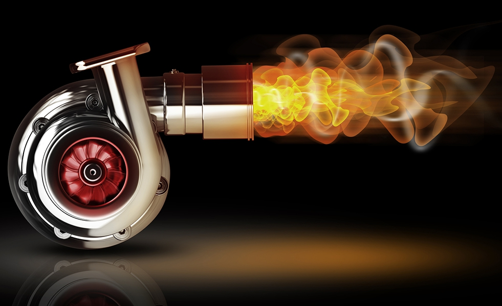

Ремонт генераторів, стартерів та турбін
Призначенням електрообладнання автомобіля (або електричної системи автомобіля) вважається вироблення електричної енергії та живлення різноманітних автомобільних систем і пристроїв.
Особливості роботи генераторів, стартерів і турбін
- Генератор виступає основним джерелом електричного струму та забезпечує живлення цим струмом усіх споживачів і зарядку для акумуляторної батареї.
- Стартер – це основа пускової системи двигуна, яка при несправності блокує роботу інших елементів електрообладнання.
- Турбіна – це деталь двигуна, яка в ході експлуатації відчуває на собі величезні навантаження. Саме тому пристрій нерідко може виходити з ладу.
Коли та чому необхідно робити ремонт генераторів, стартерів і турбін? Ось кілька порад:
- Несправності генератора можуть бути як електричними (розряджена акумуляторна батарея, несправність запобіжника, електропроводки або вимикача, дефект в обмотці статора або ротора тощо), так і механічними (знос шийок вала, пошкодження трифазної обмотки, обрив приводного ременя тощо).
- Якісний ремонт стартерів виробляється дозволяє виявити такі приховані дефекти, як обрив проводки, міжвиткові замикання, перевірка якоря і статора тощо.
- Діагностика роботи системи запалювання зазвичай проводиться до початку зимового сезону.
- У переважній більшості випадків стартер перестає працювати через вигорілого тримача щіток (через знос самих щіток, прогорання тримача, розпаювання щіток або звичайну корозію).
- Тільки повна діагностика турбіни може показати, наскільки доцільний її ремонт, що саме слід ремонтувати та які запчастини використовувати.
- Тривожними ознаками, на які обов'язково варто звернути увагу при роботі турбіни є, наприклад, свист, що з'являється при збільшенні кількості оборотів, зниження тяги, густий чорний дим з вихлопної труби.
Фахівці не рекомендують самостійно проводити ремонт генераторів, стартерів і турбін, оскільки для цього Вам знадобиться спеціальне та дороге обладнання. Проводячи ремонт у нашому автосервісі, Ви обов'язково залишитеся задоволені якістю наших послуг і розцінками. Телефонуйте!